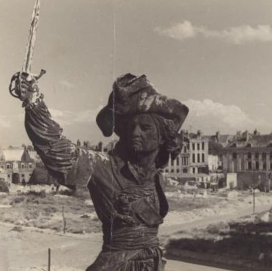
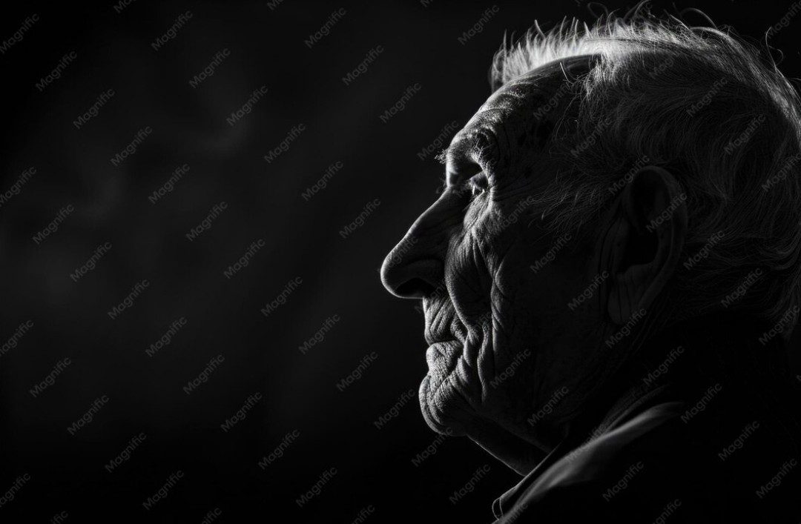

Ce musée numérique n’est pas un décor. Il existe pour une raison simple : transmettre. Transmettre à mon fils ce que fut Dunkerque, ce que les anciens ont vécu, ce que la guerre a brisé, et ce que la mémoire doit protéger. Pour qu’il comprenne d’où il vient, et ce que cette ville a traversé.

Dunkerque a été ravagée par la guerre. La Place Jean Bart, cœur de la ville, n’était plus qu’un champ de ruines. Ce site existe pour rappeler ce que la guerre a brisé, et pour transmettre cette histoire aux générations qui arrivent.

La mémoire ne survit que si quelqu’un la porte. Les anciens, les témoins, les survivants ont transmis ce qu’ils ont vécu. Ce musée numérique leur rend hommage, et transmet à mon fils ce qu’ils ont protégé.
Ce site est un lieu de mémoire. Un lieu pour comprendre, ressentir, transmettre. Pour lui. Pour nous. Pour ceux qui ont vécu.